🎯
Objetivo de aprendizaje
Explicar cómo el sistema nervioso coordina respuestas frente a estímulos, relacionando organización, impulso y sinapsis, y fundamentar medidas de cuidado.
Sigue una señal desde el estímulo hasta la respuesta: descubre la red nerviosa, los reflejos, el impulso, las sinapsis y las decisiones que ayudan a cuidarla.
Explicar cómo el sistema nervioso coordina respuestas frente a estímulos, relacionando organización, impulso y sinapsis, y fundamentar medidas de cuidado.
¿Cómo viaja una señal desde que detectamos un estímulo hasta que nuestro cuerpo responde?
SNC, SNP, neuronas y glía.
Abrir clase 1 →Arco reflejo, anatomía y enfermedades.
Abrir clase 2 →Potencial de acción y mielina.
Abrir clase 3 →Sinapsis, sustancias y cuidado.
Abrir clase 4 →Relacionar las estructuras del sistema nervioso con su función.
La ves, interpretas su trayectoria y mueves las manos. Tu sistema nervioso coordina la información sensorial y la respuesta motora.
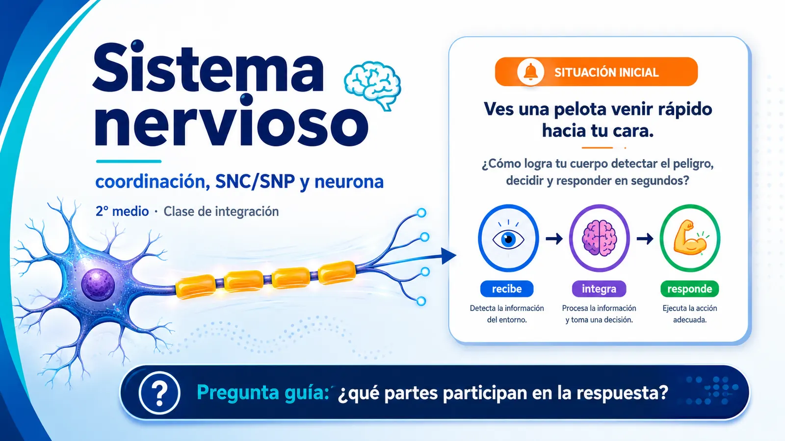
Recibe información. Los músculos son los efectores de la respuesta.
El sistema nervioso central (SNC) incluye el encéfalo y la médula espinal. El periférico (SNP) conecta el SNC con el resto del cuerpo mediante nervios y ganglios.
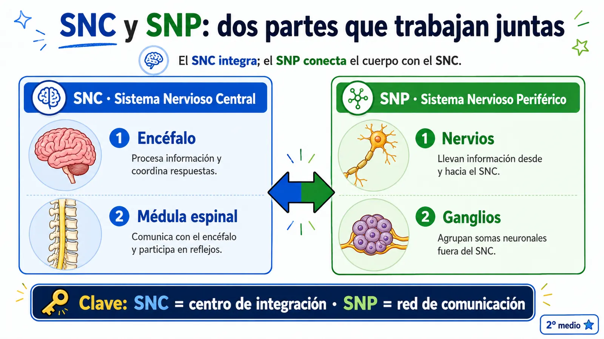
Al SNP. La médula espinal que recibe esa información pertenece al SNC.
Una neurona es una célula especializada en recibir, integrar y transmitir señales. Sus partes trabajan juntas; no es un cable vacío.
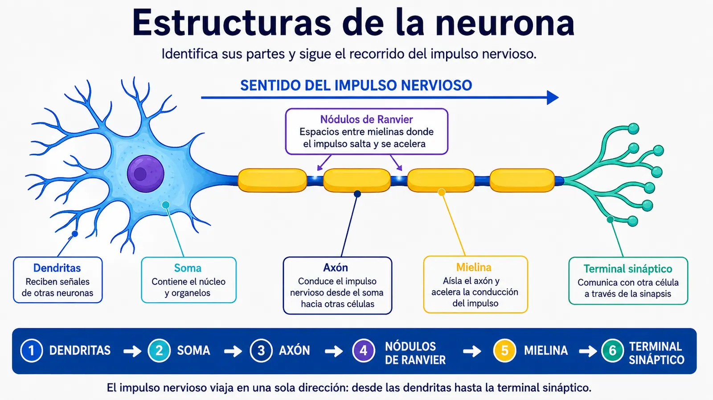
Por el axón. Este recorrido es un modelo general; existen distintas formas de neuronas.
Las células gliales sostienen el funcionamiento del tejido nervioso. Algunas forman mielina, otras regulan el entorno o participan en la defensa.
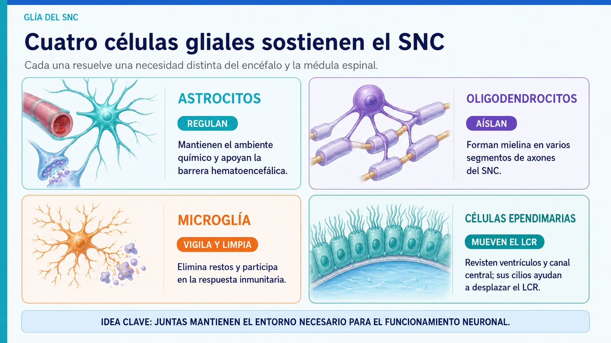
No. Oligodendrocitos y células de Schwann la forman; otras glías cumplen funciones diferentes.
El material distingue neuronas sensitivas, interneuronas y motoras. También presenta células ependimarias y satélite: la función de la glía depende de su localización.
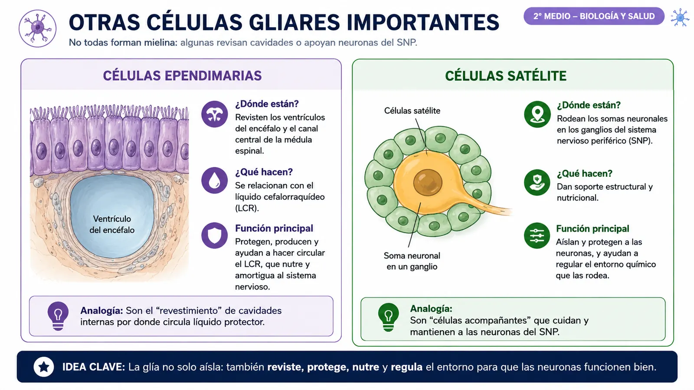
Las células satélite. No deben confundirse con las células de Schwann que envuelven axones.
Imagina que escuchas tu nombre y levantas la mano. Explica qué recibe el estímulo, qué integra la información y qué ejecuta la respuesta.
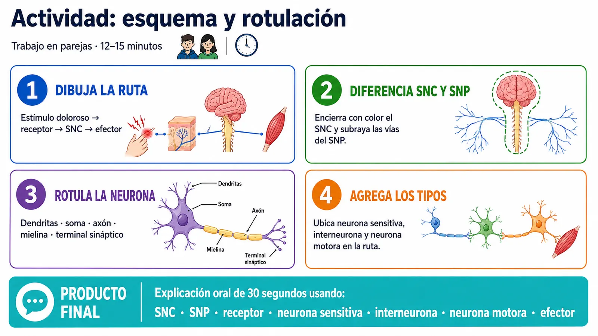
La respuesta necesita receptores, vías periféricas, integración central y efectores. También depende del apoyo de la glía.
Afirmación: El sistema nervioso coordina una ruta completa.
Evidencia: La retina detecta luz, el SNC integra y las vías motoras activan músculos.
Razonamiento: La respuesta necesita receptores, SNC, SNP y efectores conectados.
Explicar un arco reflejo y relacionar estructuras con funciones y alteraciones.
Un estímulo doloroso puede provocar un reflejo de retirada. La médula espinal integra este circuito sin esperar una decisión consciente. La información también asciende al encéfalo.
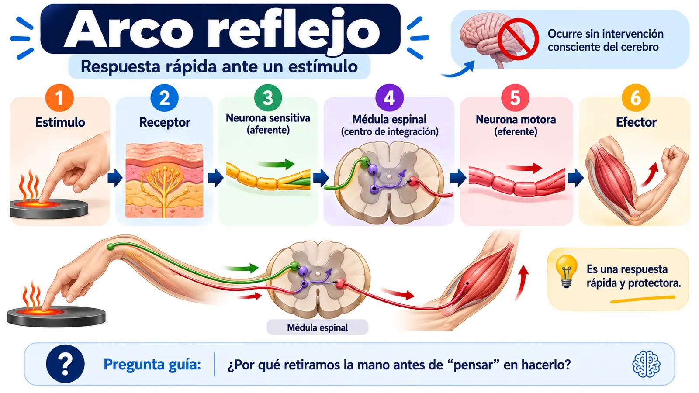
La médula espinal pertenece al SNC. Además, existen reflejos integrados en el tronco encefálico. No realices pruebas con calor, dolor o golpes.
El arco reflejo es el circuito nervioso; el acto reflejo es la respuesta observable. La retirada es un ejemplo de circuito con varias sinapsis.
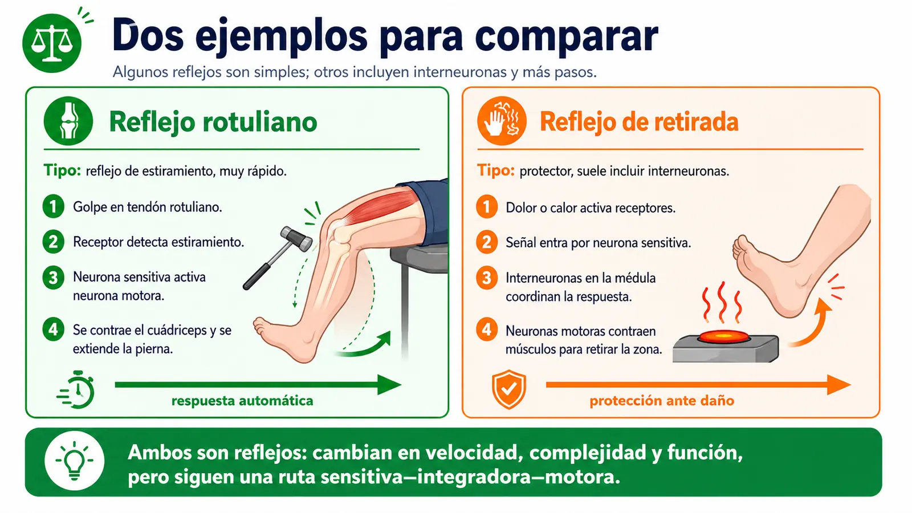
Mover la mano es la respuesta o acto reflejo. El arco es el circuito que la hace posible.
Las regiones del encéfalo tienen especializaciones, pero funcionan en redes. Evita pensar que una conducta compleja depende de una sola zona aislada.
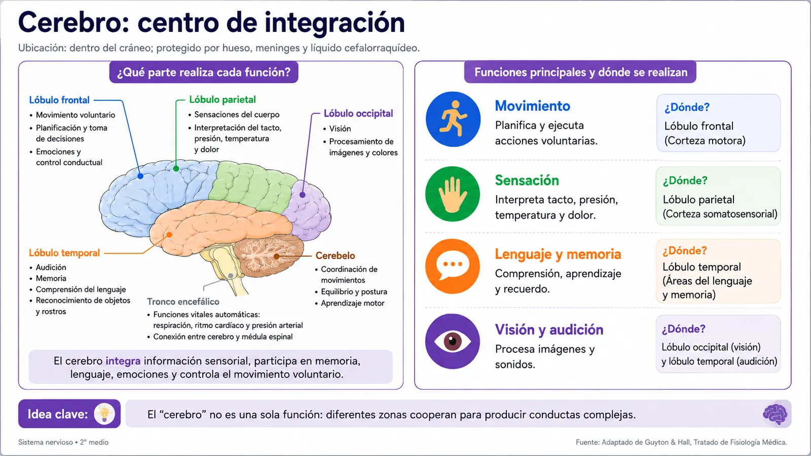
El cerebelo, en coordinación con otros sistemas y regiones.
La corteza cerebral tiene regiones con especializaciones. Las conductas complejas requieren cooperación entre áreas y no se localizan completamente en un solo punto.
El occipital es una hipótesis funcional. El caso no permite diagnosticar ni excluir otras estructuras.
Las meninges rodean el encéfalo y la médula. El líquido cefalorraquídeo (LCR) contribuye a amortiguar y proteger el SNC.
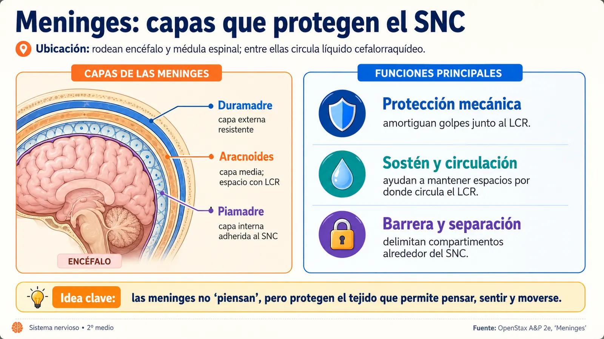
No. Su función principal es protectora. La integración depende de circuitos neuronales.
En el esquema medular, la información sensitiva entra por raíces dorsales y las fibras motoras salen por raíces ventrales. Los nervios espinales formados después contienen fibras de ambos tipos.
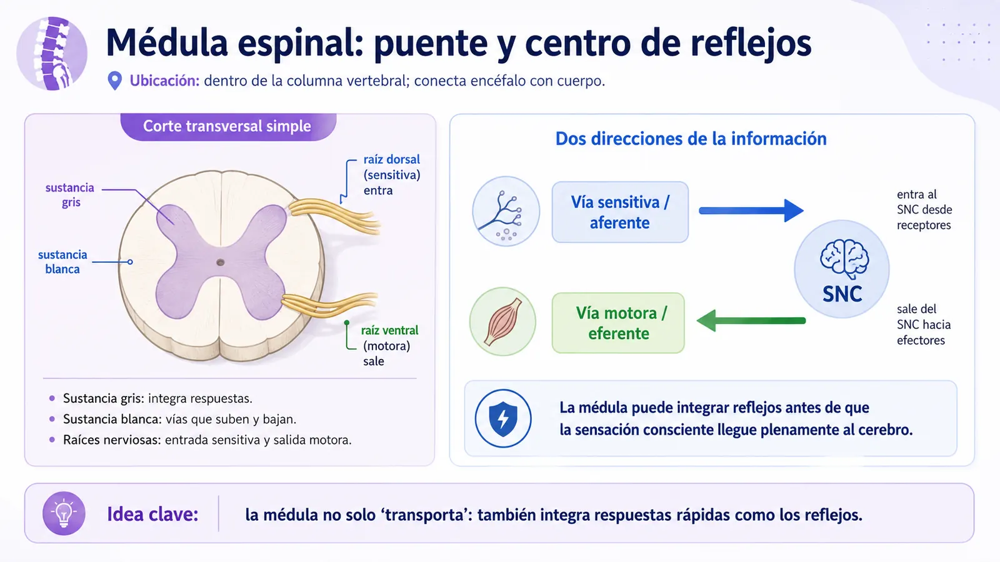
No. La dorsal conduce información aferente; la ventral conduce información eferente.
El material diferencia enfermedades desmielinizantes y neurodegenerativas. Esta distinción ayuda a explicar mecanismos, aunque una enfermedad puede afectar más de una estructura.
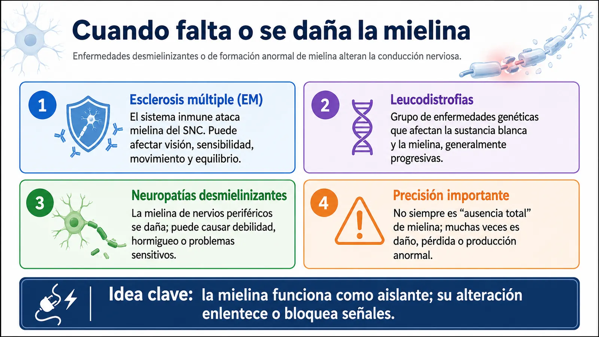
No. Puede haber pérdida parcial, lesión o formación anormal. Los efectos dependen de la localización y extensión del daño.
La neurodegeneración implica deterioro de neuronas y circuitos. Los ejemplos del material permiten comparar la estructura afectada y sus posibles consecuencias.
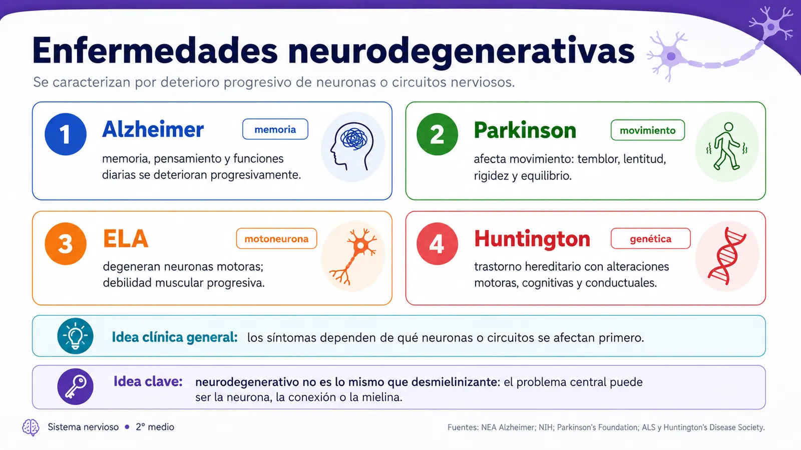
La primera destaca el deterioro de neuronas o circuitos; la segunda, el daño de mielina. La distinción es útil, pero no son compartimentos absolutamente aislados.
Caso ficticio: una persona tiene una alteración de la mielina del SNC. Usa el dato para proponer una consecuencia posible en la comunicación nerviosa.
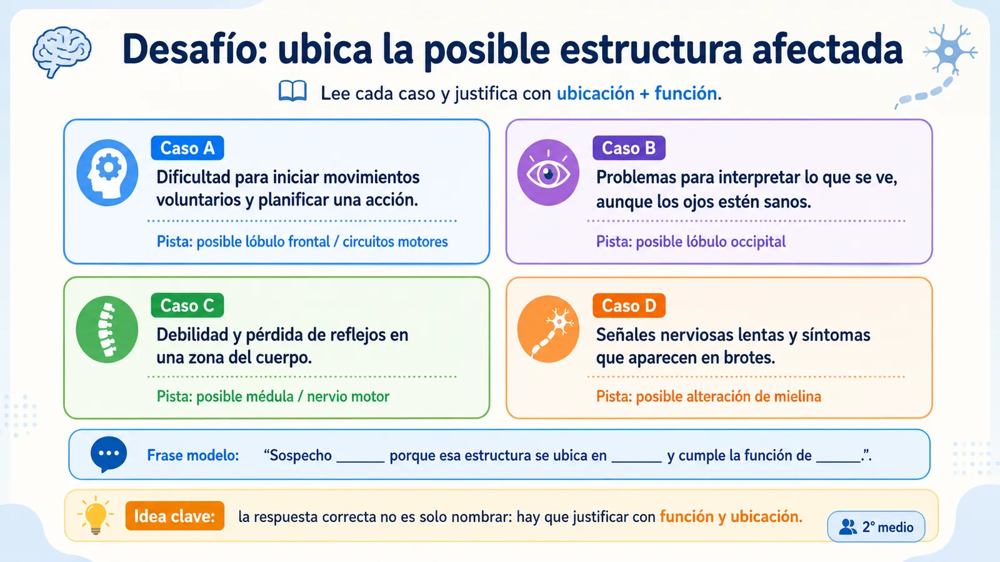
No. Permite una explicación general, pero los efectos dependen, entre otros factores, de la localización y extensión del daño.
Afirmación: El daño de mielina puede alterar la conducción.
Evidencia: La mielina favorece una transmisión rápida y el caso informa su alteración.
Razonamiento: Al perder aislamiento, una señal puede enlentecerse o interrumpirse; el caso no permite diagnosticar.
Explicar cualitativamente cómo se genera y propaga un potencial de acción.
La membrana separa cargas y mantiene diferencias en la concentración de iones. En reposo, el interior neuronal suele ser negativo respecto del exterior.
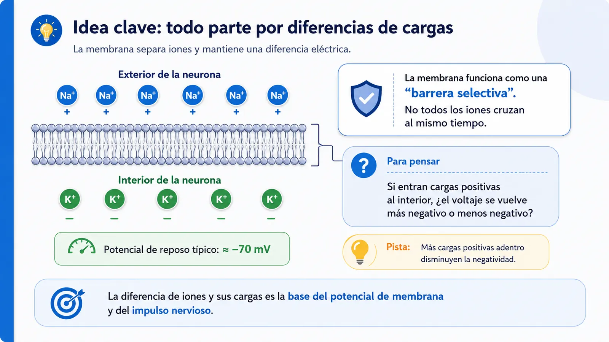
No. Se debe a cambios eléctricos asociados al movimiento de iones a través de la membrana.
Si la despolarización alcanza el umbral en la zona de inicio, se genera un potencial de acción. Su amplitud no aumenta simplemente porque el estímulo sea más intenso.
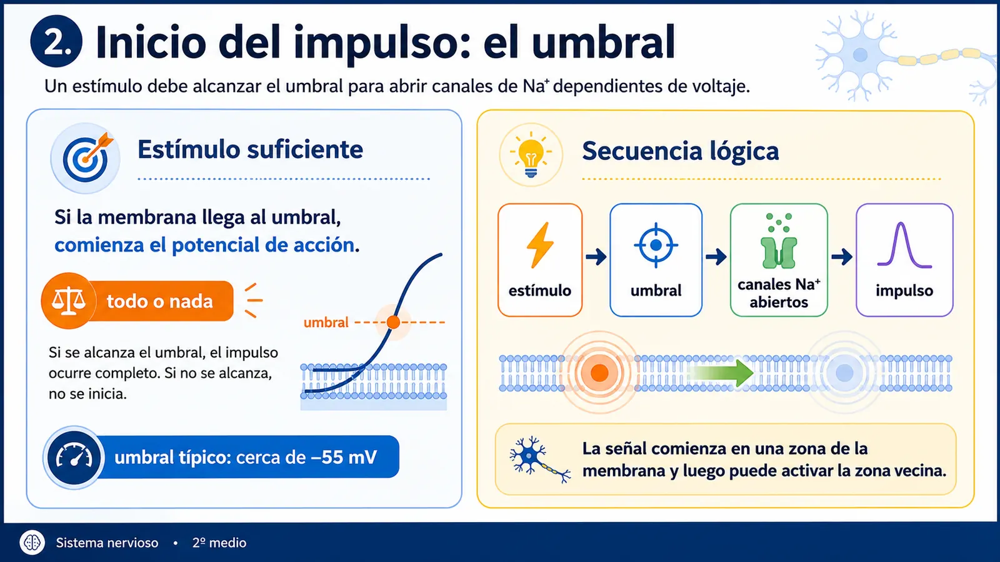
No. La intensidad puede codificarse mediante frecuencia de disparo y número de neuronas activadas.
En un modelo típico, se abren canales de Na⁺ y entra sodio durante la despolarización. Luego la salida de K⁺ contribuye a la repolarización.
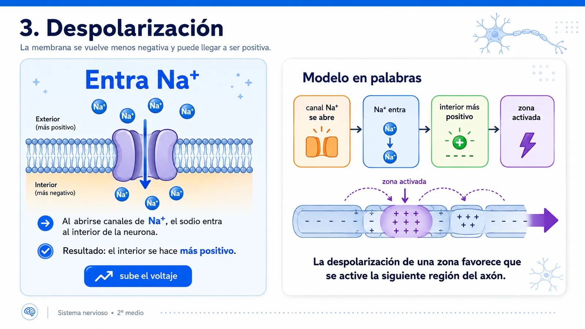
Na⁺. La bomba sodio-potasio mantiene gradientes a largo plazo; no es la causa directa de toda la fase descendente.
El eje vertical representa voltaje de membrana (mV) y el horizontal, tiempo. Los valores −70 mV, −55 mV y +30 mV son referencias de un modelo escolar, no constantes para todas las neuronas.
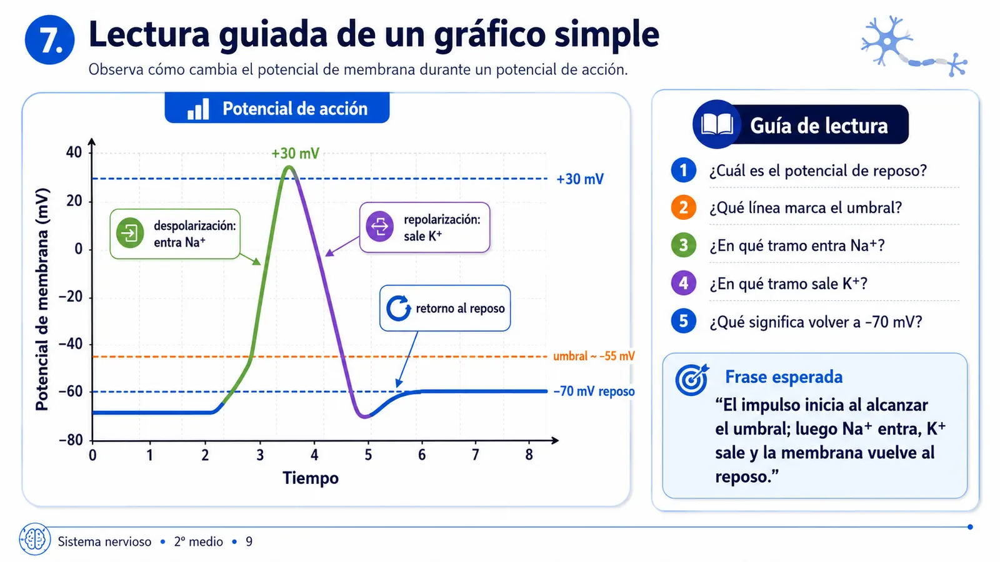
En el modelo típico entra Na⁺ en el ascenso y sale K⁺ durante la repolarización. La bomba Na⁺/K⁺ sostiene los gradientes a largo plazo.
En axones mielinizados, el potencial de acción se regenera principalmente en los nodos de Ranvier. Esto permite una conducción saltatoria más rápida.
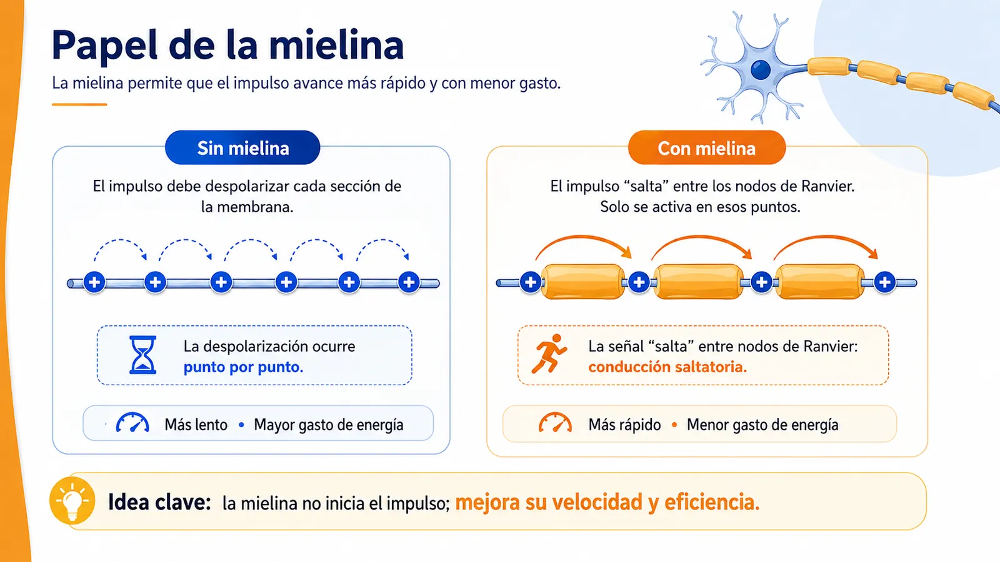
El potencial de acción se regenera. No se atenúa como una señal pasiva a lo largo del axón.
Ahora puedes explicar cómo viaja la información por las neuronas de un arco reflejo: mediante potenciales de acción a lo largo de los axones.
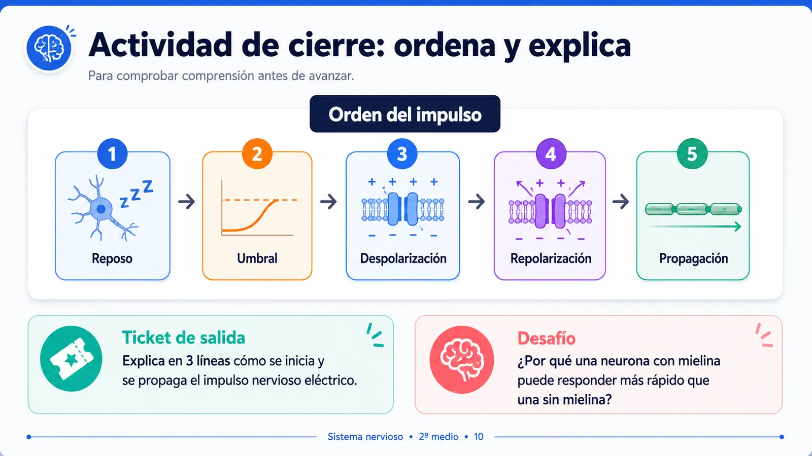
A través de una sinapsis. La próxima clase compara la comunicación química y eléctrica.
Afirmación: El ascenso desde −70 mV corresponde a despolarización.
Evidencia: El gráfico muestra que el voltaje se vuelve menos negativo y luego positivo.
Razonamiento: En el modelo, la entrada de Na⁺ produce el ascenso; el voltaje se interpreta con ambos ejes.
Comparar sinapsis y explicar cómo algunas sustancias alteran la comunicación neuronal.
La neurona presináptica libera neurotransmisores. Estos atraviesan la hendidura y se unen a receptores de la célula postsináptica.
En la sinapsis química cruzan la hendidura extracelular y se unen a receptores.
La respuesta depende del neurotransmisor y del receptor. Una señal excitatoria aumenta la probabilidad de disparo; una inhibitoria la reduce.
No. Puede ser excitatoria o inhibitoria, y la respuesta depende de la integración de múltiples señales.
Las uniones comunicantes permiten el paso directo de corriente iónica entre células. La transmisión es muy rápida y a menudo bidireccional.
La química. La eléctrica utiliza uniones comunicantes.
El sistema nervioso autónomo regula funciones de órganos internos. Sus ramas simpática y parasimpática contribuyen a ajustar el organismo según la situación.
No. Ambos cumplen funciones necesarias. Su actividad se regula según las demandas del organismo.
La señal química debe regularse. Según el neurotransmisor y la sinapsis, puede terminar por recaptación, degradación enzimática o difusión.
Puede aumentar o prolongarse su disponibilidad en la sinapsis. El efecto final depende del neurotransmisor, receptor y circuito.
Las sustancias psicoactivas pueden modificar receptores, liberación o recaptación. Sus mecanismos y efectos no son todos iguales.
No. Es una generalización incorrecta. Es necesario explicar mecanismos y riesgos concretos. Los medicamentos prescritos requieren seguimiento profesional y no se equiparan automáticamente al consumo problemático.
Clasificamos la acción sobre un receptor, no a una sustancia como universalmente “activadora” o “inhibidora”. Un receptor puede modificar la actividad de diferentes circuitos.
Porque puede bloquear una señal que favorece somnolencia, como ocurre con cafeína y adenosina. El efecto depende de la función del receptor y del circuito.
Dormir adecuadamente, prevenir traumatismos y evitar el consumo de sustancias ayudan al cuidado del sistema nervioso. No compartas experiencias personales de consumo en esta actividad.
Ejemplo: evitar alcohol antes de una actividad que exige coordinación, porque altera la comunicación nerviosa y puede afectar la respuesta motora.
Afirmación: Dormir es una medida fundamentada de cuidado.
Evidencia: La cafeína bloquea receptores de adenosina y puede interferir con el sueño.
Razonamiento: Un estimulante no reemplaza las funciones biológicas del descanso y su exceso puede afectar el rendimiento.
Los receptores transforman estímulos en señales nerviosas.
El SNC procesa información mediante redes, no por una estructura aislada.
El potencial de acción se regenera a lo largo del axón.
Las sinapsis modifican la actividad de otra célula y pueden excitar o inhibir.
La respuesta depende de receptores, nervios, médula, encéfalo, músculos o glándulas.
El potencial de acción se regenera a lo largo de un axón sano.
Las sustancias modifican mecanismos distintos; se deben explicar sus efectos concretos.
Selecciona una fase. El panel explica qué ocurre y la animación marca dónde se encuentra el mensaje.
Construye afirmación, evidencia y razonamiento sobre un caso de conducción o sinapsis.
Explora modelos de neuronas, encéfalo y sinapsis con una guía de observación.
Abrir laboratorio 3DResumen de las cuatro clases, vocabulario y actividades CER.
Abrir guía📚 FuentesSelecciona una actividad. Los quizzes entregan ocho preguntas de una clase; el simulacro integra las cuatro clases en veinte preguntas.
Al finalizar se genera un informe con identificación, respuestas, puntaje y ticket. El formulario lo dirige al estudiante y a belenacuna@liceosannicolas.cl y franciscopinto@liceosannicolas.cl.
La ruta utiliza láminas clave junto a explicaciones accesibles. En cada clase puedes desplegar todas las diapositivas aportadas: 19, 20, 15 y 18, respectivamente.